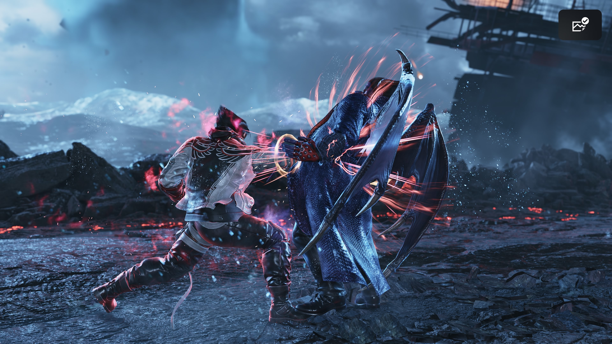

Kazuya counterattacked before you had the demonpaw come out with his left punch-left punch-right punch combo. Jin took damage. Kazuya is now about to do his own demonpaw. What will you do?
 Sidestep and launch: Step to the side to evade and launch him
Sidestep and launch: Step to the side to evade and launch him 
KonshinSeikenzuki: A slow but powerful straight punch.